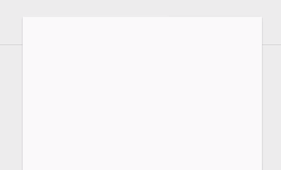
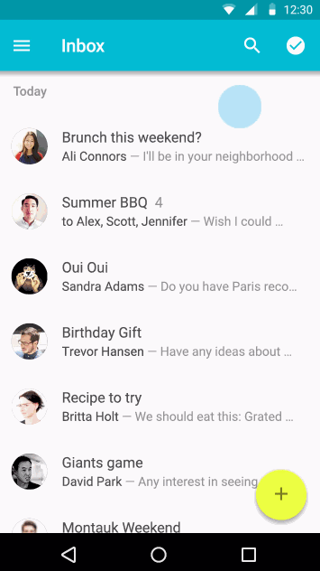

Type1 Demo
Google Material Design swipe (pull) to refresh.
Open this site in mobile browser or webview, then use your finger to pull down the page.
You can also click some button ↓↓ to refresh the page.
Click me!
Maybe you can try the Type2:Below surface
Three types of this Material Design refresher.
Type1: Above surface (default)
Source code:
mRefresh();
You can try it in chrome device mode or other mobile emulator.
Similarly, try it in mobile browser or webview by scanning the following QR code:

URL: http://lightningtgc.github.io/material-refresh/type1.html
Type2: Below surface
Source code:
mRefresh({
nav: '#navMain'
});Try it in mobile browser or webview by scanning the following QR code:
URL: http://lightningtgc.github.io/material-refresh/index.html
Type3: Button action

Source code:
$('#buttonAction').on('tap', function(){
mRefresh.refresh();
});